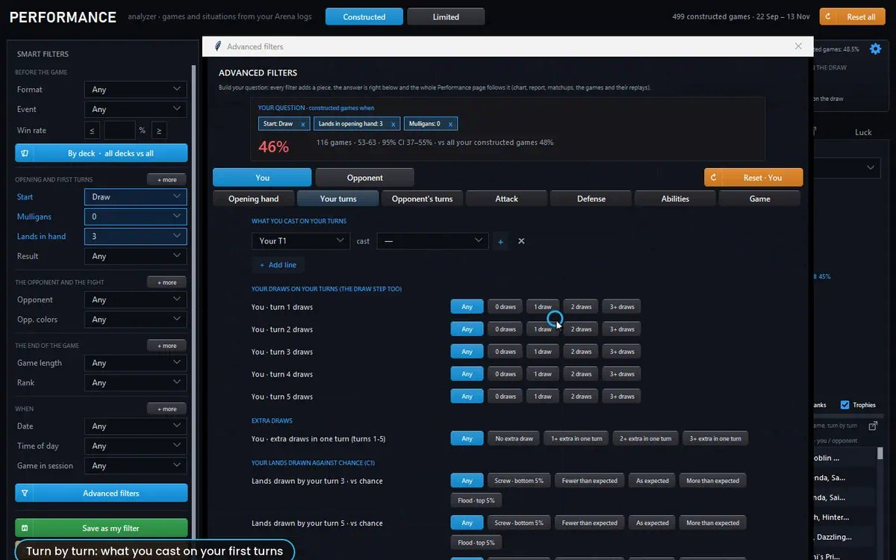

Why the Leak Finder thinks in EV
Most game analyzers tell you what you did wrong. We decided to stop doing that. This is what EV is, why we rebuilt the Leak Finder around it, and why it reasons from your side of the table instead of judging you from outside.

What EV is
EV stands for expected value. In Magic, the value that matters is your chance to win. At any moment of a game, the board, the life totals, the cards in hand and whose turn it is give you a certain chance to win: say 48%. You play a creature, the opponent answers, combat happens, and at the end of the turn that chance is 55%. That turn was worth +7 points of win chance.
The expected part is the comparison. A turn three where you are slightly behind usually moves your chance by a certain amount in your games. If yours moved it more than usual, you gained EV; if it moved it less, you left value on the table. The Leak Finder measures both: what you got, and what that same spot usually gives.
Why we stopped calling things mistakes
The first Leak Finder looked for errors: a land not played, mana left open, a creature cast before attacking. It found real ones, but it also flagged plenty of plays that were perfectly fine. You held a land to bluff. You kept mana up because you had an instant. You held a creature in hand for three turns because it is far better next to the card that feeds it. A rule written from outside cannot see your plan.
And even a good choice can meet a bad outcome. Suppose you cast a creature that pays off only when you gain life, and you wait until you have a life-gain card in play. Three times out of eight the opponent removes it straight away. The other five times it survives, and you win most of those games. Judging each game on its own outcome would call the play a mistake three times. Judging it on its EV across all eight tells you the truth: it is a good plan that sometimes gets answered.
So the Leak Finder now starts from the opposite assumption. Every play is a strategy until the numbers say otherwise. It never tells you that you were wrong; it tells you where your games gained more than usual and where they gained less.
From the game down to the card
A player thinks about a game from the top down, and so does the Leak Finder. First the game: from the win chance of the hand you kept to the win or the loss. Then the turns that moved it most. Then the phase inside the turn: main phase 1, combat, main phase 2. Then the play, and the card that made it.
The points always add up. The turns of a game sum to the game; the phases of a turn sum to the turn. Nothing is counted twice and nothing appears from nowhere, so when a phase shows −8 you know those 8 points really left your game there.
On your side of the table
Several choices make this system think like the player who is sitting at the table, not like a judge:
- It compares you with yourself. The expected value comes from your own games of that type, in the same turn, on the same side and from the same situation, from far behind to far ahead. A control deck is not judged by the habits of an aggro deck.
- It looks ahead. A play is not judged on the moment it happens. Holding up mana is read together with the opponent's next turns, because that is when a held answer pays off.
- It reads the context of a card. The same creature is worth one thing when it lands next to its partner and another when it lands alone; one thing when you cast it at once and another when you waited for the right moment. The Leak Finder shows both.
- It values what a card did, not only whether you won. Winning a combat, trading, hitting unblocked, dealing the lethal, a block that saved you, drawing a removal spell: each deed is measured as the board after it against the same board without it. The ranking of those deeds is not written by us; it comes from your games.
- It tells you how sure it is. Every number says how many games stand behind it, and the EV value of a spot gives a verdict only when the average is clear of chance: worth it, avoid, or too close to call.
What it cannot do
We would rather say this clearly. The win chance comes from a model trained on public 17Lands replays of Limited games (CC BY 4.0); in Constructed it is an estimate that compares moments with each other well, but its absolute numbers should be read with care. The system sees only what reaches the battlefield or is revealed: cards kept in hand stay hidden. And with few games a number is a hint, not a fact. It says so every time.
The goal has not changed: help you understand where your games are won and lost, in your own terms, so that the next decision is a little better than the last.
Read the guide: Leak Finder →